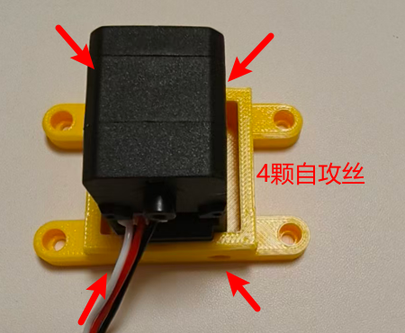
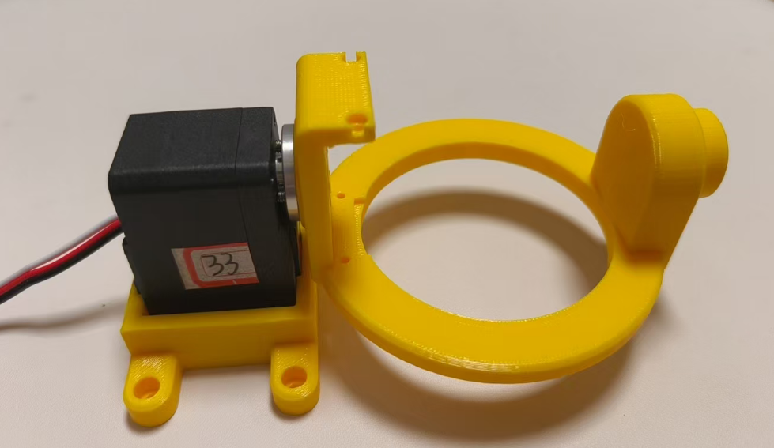
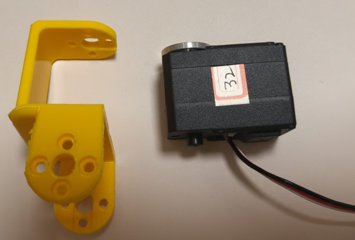
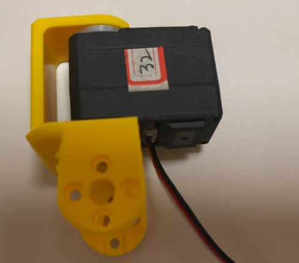
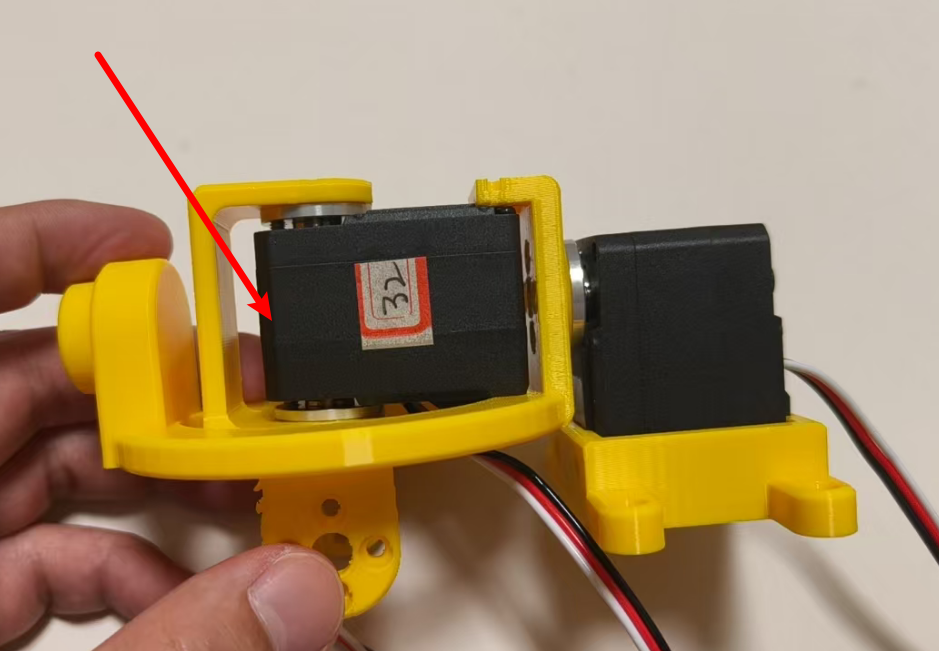
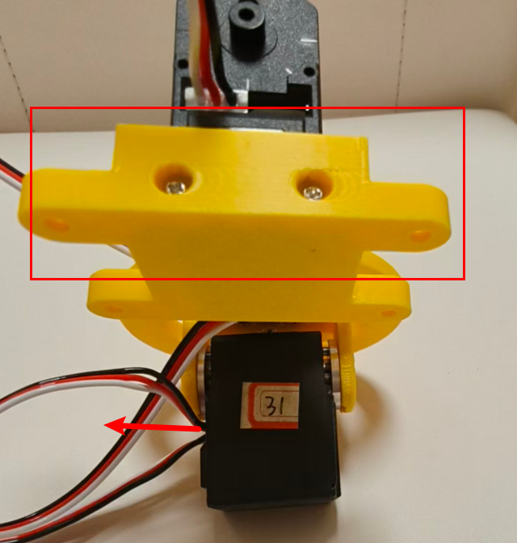
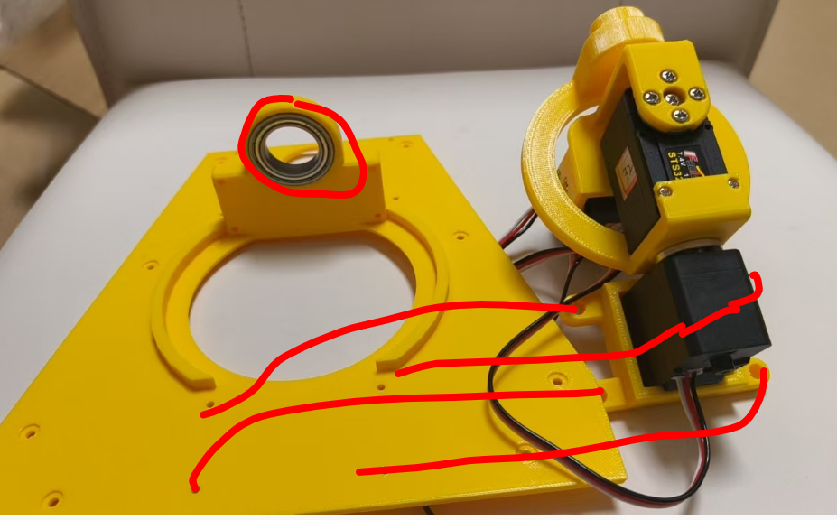
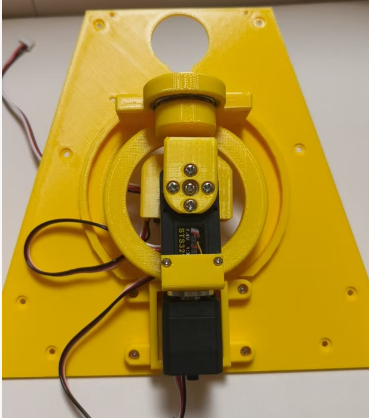

<!DOCTYPE lake>
<h2 data-lake-id="o2uTg" data-lake-index-type="2" id="o2uTg"><span data-lake-id="u880d2819" id="u880d2819">33号电机</span></h2><p data-lake-id="udd73c969" id="udd73c969" style="text-align: center"></p><p data-lake-id="u2fc373bd" id="u2fc373bd" style="text-align: center"></p><h2 data-lake-id="RkaTZ" data-lake-index-type="2" id="RkaTZ"><span data-lake-id="ube87c9e8" id="ube87c9e8"> 32号电机</span></h2><p data-lake-id="u67598318" id="u67598318" style="text-align: center"></p><p data-lake-id="u2b81417b" id="u2b81417b"><span data-lake-id="ubc65d154" id="ubc65d154" style="color: #DF2A3F">先把电机和结构件套在一起，先不要拧螺丝固定</span></p><p data-lake-id="uc4dbce95" id="uc4dbce95"><span data-lake-id="u08c7842a" id="u08c7842a" style="color: #DF2A3F">先把电机和结构件套在一起，先不要拧螺丝固定</span></p><p data-lake-id="u48873b8a" id="u48873b8a"><span data-lake-id="u5c0d3938" id="u5c0d3938" style="color: #DF2A3F">先把电机和结构件套在一起，先不要拧螺丝固定</span></p><p data-lake-id="ud789edf1" id="ud789edf1" style="text-align: center"></p><p data-lake-id="u80fc21fb" id="u80fc21fb"><span data-lake-id="u82e5bc68" id="u82e5bc68">将刚才的结构，这从角度小心斜插下去，然后打螺丝固定就好</span></p><p data-lake-id="ubc427b5c" id="ubc427b5c" style="text-align: center"></p><h2 data-lake-id="jDuze" data-lake-index-type="2" id="jDuze"><span data-lake-id="u52206bf2" id="u52206bf2">31号电机</span></h2><p data-lake-id="u493881be" id="u493881be"><span data-lake-id="uaefabcbd" id="uaefabcbd">注意出现的方向，别搞错了</span></p><p data-lake-id="u324de04e" id="u324de04e" style="text-align: center"></p><p data-lake-id="ubd8c8f1b" id="ubd8c8f1b"><br/></p><h2 data-lake-id="ZCxfj" data-lake-index-type="2" id="ZCxfj"><span data-lake-id="u87071b92" id="u87071b92">固定头部</span></h2><p data-lake-id="u0435144c" id="u0435144c" style="text-align: center"></p><p data-lake-id="u73360762" id="u73360762"><span data-lake-id="u215299e5" id="u215299e5">装完之后是这个样子的</span></p><p data-lake-id="uc643cd22" id="uc643cd22" style="text-align: center"></p><h2 data-lake-id="VCTQ2" id="VCTQ2"><br/></h2>